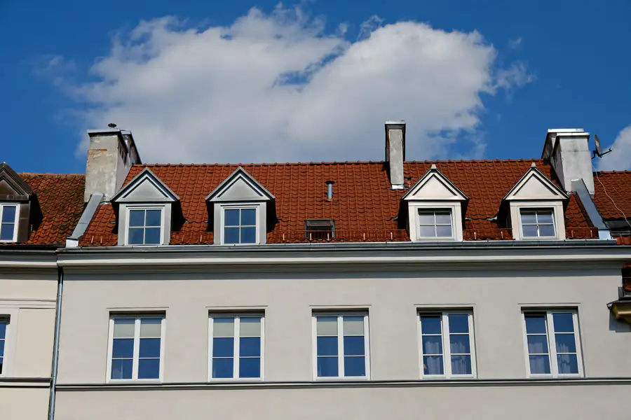
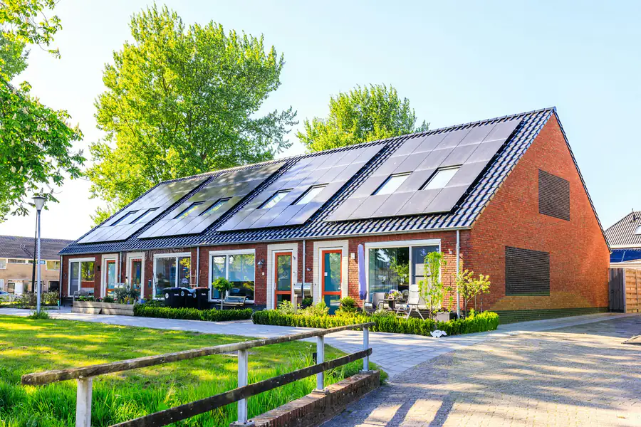
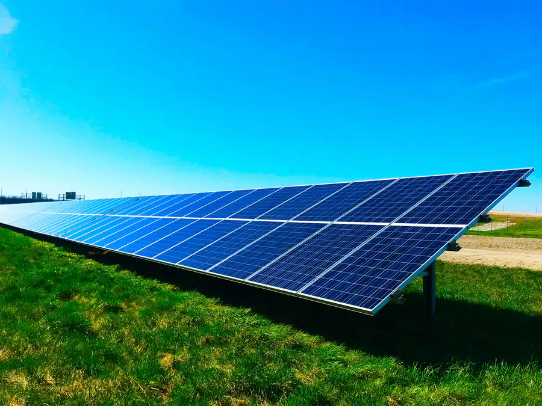

Planung & Beratung
Wir schauen uns Ihr Dach, Ihren Stromverbrauch, Heizung und Warmwasser an. Daraus entsteht eine Anlage, die zu Ihnen passt, mit Speicher oder ohne.
Was braucht BwM von mir für ein Angebot?
Planung & Beratung

Solar Technik BwM · Lontzen
Wir planen, montieren und schließen Photovoltaikanlagen an – für Häuser im Raum Aachen, in Ostbelgien und Südlimburg.
Planung & Beratung
Wir sehen uns Dach, Verbrauch und Wünsche an und legen die Anlage passend aus – auf Flachdach, Satteldach, Pultdach oder Wiese.
Mehr zu Planung & BeratungMontage
Dachhaken aus Edelstahl, Schienen aus Aluminium und Module namhafter Hersteller.
Mehr zu MontageAnschließen
Wechselrichter, Speicher und Energiezähler – bis Ihr Haus den eigenen Strom nutzt.
Mehr zu AnschließenFertig
Planung, Montage, Anschluss und Wartung aus einer Hand, im ganzen Dreiländereck.
Solar Technik BwM
Wir planen und installieren Photovoltaik im Raum Aachen – für Kunden in Deutschland, Belgien und den Niederlanden. Mit Produkten namhafter Hersteller und alles aus einer Hand.
Über unsLeistungen
Wir schauen uns Ihr Dach, Ihren Stromverbrauch, Heizung und Warmwasser an. Daraus entsteht eine Anlage, die zu Ihnen passt, mit Speicher oder ohne.
Was braucht BwM von mir für ein Angebot?
Planung & BeratungOb Ziegel, Blech, Bitumen oder Wiese: Wir wählen das Gestell passend zum Dach und montieren sauber und dicht.
Wie wird auf meinem Dach befestigt?
MontageWechselrichter, Speicher und Energiezähler verbinden wir mit Ihrem Hausnetz und nehmen die Anlage in Betrieb.
Wann sollte die Waschmaschine laufen?
AnschließenDamit die Anlage viele Jahre liefert, prüfen wir Befestigung, Module, Kabel, Wechselrichter und Ertrag.
Meine Anlage liefert weniger – was tun?
WartungDachformen
Flachdach, Satteldach, Pultdach oder Freifläche: Jegliche Wünsche der Anbringung sind möglich.

Die Module stehen geneigt in Reihen auf Gestellen, beschwert mit Betonsteinen. Den Reihenabstand planen wir so, dass sich die Reihen nicht verschatten.
Dachhaken aus Edelstahl laufen unter der Pfanne hindurch, darauf liegen die Schienen und darauf die Module – parallel zur Dachfläche.
Eine Dachfläche, eine Richtung. Je nach Eindeckung setzen wir Dachhaken oder Trapezblechschuhe mit Dichtung.
Auf der Wiese steht das Gestell auf dem Boden. Neigung und Ausrichtung bestimmen wir frei, weil kein Dach sie vorgibt.
Referenzen
Fotos von unseren eigenen Baustellen im Dreiländereck.
Selbst ausprobieren
Jede Frage führt direkt zum passenden Werkzeug. Die Ergebnisse sind Richtwerte, keine Planung.
Anfrage
Mit Stromverbrauch, Heizung und Warmwasser können wir die Anlage schon grob auslegen, bevor wir vorbeikommen.